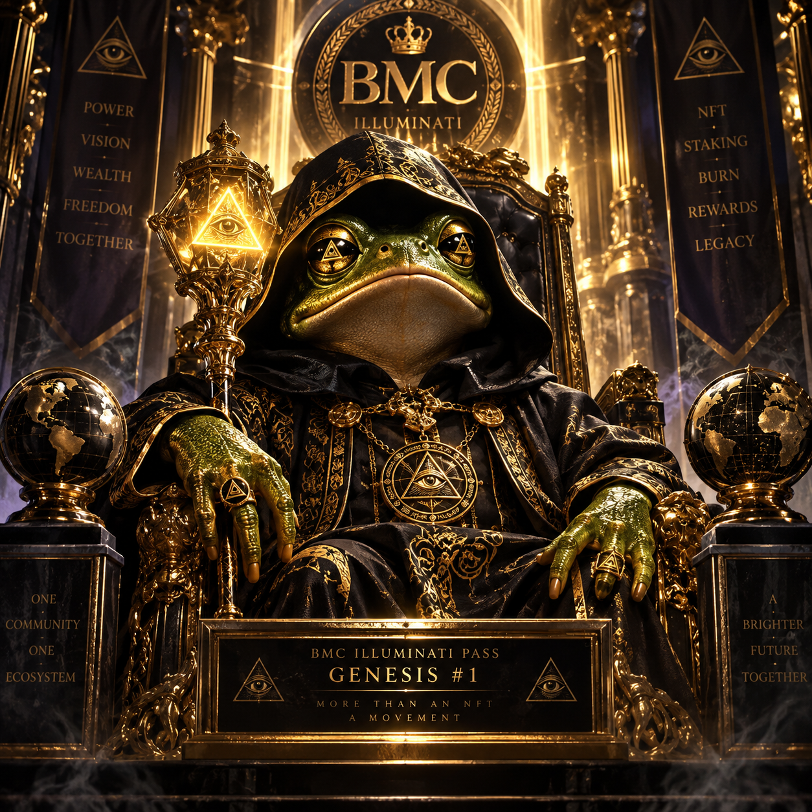

Genesis #1 — Legendary Genesis. Guaranteed to the first successful minter. The rarest piece of the collection.
Current phase—
Current mint price—
Minted / supply— / 500
Total BMC burned—
Your BMC balance—
Your BMC allowance to the pass—
Phase 1 · Genesis mint
First 40 mints. 1,000,000 BMC each, permanently burned. Token #N receives genesis-NN.png in strict order. Mint #1 is the Legendary Genesis.
—
Phase 2 · Mystery mint
Remaining 460 mints. 350,000 BMC each, permanently burned. You receive a pending-reveal NFT immediately. One Chainlink VRF seed, requested only after the sale closes, decides every outcome at once: Genesis (41–77) or Standard (on-chain SVG), 37-in-460 odds for every mint.
—
Transactions & reveals
- No transactions yet.
How it works, honestly
- Gas. Every approve and mint is an Ethereum transaction. You pay ETH gas on top of the BMC price. The BMC price is fixed in the contract; gas is set by the network and your wallet.
- Burning. The contract calls BMC
burnFromon your exact approval. Burned BMC is destroyed, not sent anywhere. Nothing is burned when you transfer a pass later. - One seed, after the sale. No randomness is requested while minting is open. The sale closes when all 500 are sold or when 30 days pass without a mint once at least one mystery token exists (the clock starts at the first mystery mint); then anyone can request a single Chainlink VRF v2.5 word. The moment it lands, every mystery outcome is final and visible in the metadata. While a request is outstanding the word can be read from the public mempool shortly before it lands, so holders should delist pending tokens until the seed is on-chain.
- No rerolls. Nobody, including the team, can reroll, pick artwork, change prices or metadata, mint for free, or withdraw anything. The team has no configuration power at all: images CID, VRF coordinator, subscription and gas lane are fixed at deployment.
- If randomness is late. If a request is not answered within 36 hours (an unfunded subscription, for example), anyone can request again, even from another funded subscription. The first word delivered wins; later deliveries are ignored.
- Odds. Every mystery mint has the same 37-in-460 chance of Genesis, whatever its position and however many are sold. The remaining-inventory figures only track which outcomes have been materialized on-chain.
Preview gallery
Genesis artworks are served from the IPFS directory fixed in the contract. Standard passes are generated fully on-chain as SVG, 423 unique combinations of 6 backgrounds, 5 cloaks, 6 eyes, 5 symbols and 6 accessories.